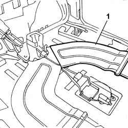
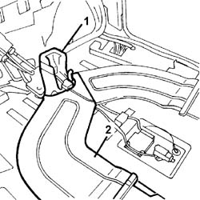

5010B45 DUCT FROM CLIMATE CONTROL SYSTEM - R R
- Path
- Procedures > 50 AUXILIARY UNITS > 5010 HEATING/VENTILATION - MISCELLANEOUS > 5010B HEATING/VENTILATION AIR PIPES AND DUCTS > 5010B45 DUCT FROM CLIMATE CONTROL SYSTEM - R R
- Kind
- repair procedure (removal / refitting; the operation number is the code)
- Applies to
- all engines; all production periods
- Interactive page
- https://sloeber94.github.io/elrnDB-fUlss/en/#/179021497
Applies to: all engines; all production periods
The instrument panel in the centre of the dashboard and/or the milometer on the steering column are poorly lit.
Applies to: all engines; all production periods
STEP | OPERATIONS TO BE CARRIED OUT | TEST RESULTS | ||
|---|---|---|---|---|
1 | PRELIMINARY CHECK | ALL OK | PROBLEMS ENCOUNTERED | ACTION |
When the door is opened and/or the key turned to ON, check that the milometer on the steering column and the instrument panel in the centre of the dashboard are lit up | Move on to Step | 1. Only the instrument panel in the centre of the dashboard is not lit up. | Move on to Step | |
2. Only the milometer on the steering column is not lit up. | Move on to Step | |||
3. Both the instrument panel and the milometer are not lit up. | Move on to Step | |||
5 | CHECK ON CORRECT OPERATION | ALL OK | PROBLEMS ENCOUNTERED | ACTION |
Check that the fault is no longer present | ||||
Applies to: all engines; all production periods
 Removing
Removing
 Refitting
RefittingOp. 0010T84 COOLANT FOR AIR CONDITIONING SYSTEM DEHYDRATE AND RECHARGE
Op. 5530B56 BATTERY DRIP TRAY COVER - R.R.
- Disconnect the negative battery terminal.
Op. 7040H29 FRONT PILLAR LOWER COVER (ONE), LEFT OR RIGHT - R.R.
- < R1 > [Both]
Op. 7040A45 FACIA RH SIDE COVER - R R
Op. 7040G22 FACIA COMPARTMENT LIGHT SWITCH/BULB HOLDER - R+R
Op. 7040A31 FLAP ASSEMBLY - R R
- < R1 > [Right side]
Op. 5010B70 SIDE CONNECTOR BETWEEN AIR. CON. CASING AND SOLENOID VALVES FOR REAR SEATS
- < R1 > [Right side]
Op. 7040A44 SEAT INTERIOR GUARD - R R
Op. 7040A68 GRILLE FOR CENTRE DASHBOARD SPEAKER - R.R.
- < R1 > [Both]
Op. 7040A47 ODDMENTS POCKET UNDER DASHBOARD - R.R.
Op. 7040A60 UNDER FACIA TRIM - R+R
- < R1 > [Left side]
Op. 5010B70 SIDE CONNECTOR BETWEEN AIR. CON. CASING AND SOLENOID VALVES FOR REAR SEATS
- < R1 > [Left side]
Op. 7040A65 PASSENGER COMPARTMENT BOX LOCK , ONE , R R
- < R1 > [Both]
Op. 7040A89 SPEAKER GRILLE (ONE) LH OR RH ON INSTRUMENT FACIA - R R
Op. 2125C24 GEAR LEVER KNOB - R + R
Op. 7040A60 UNDER FACIA TRIM - R+R
Op. 7040A26 STEERING COLUMN TRIM - R+R
Op. 5580C18 AIR BAG MODULE - R+R
Op. 4110A10 STEERING WHEEL - R+R FOR REPLACEMENT OR CHECKS
Op. 5550A10 STALK UNIT ASSEMBLY - R+R
Op. 4110A26 STEERING WHEEL ADJUSTMENT PLATES - R.R.
Op. 5580E08 AERIAL FOR ALPHA CODE - R R
Op. 5520A10 IGNITION SWITCH ASSEMBLY - R+R
Op. 4110A30 SUPPORT WITH STEERING CONTROL SHAFTS - R+R - INCLUDES R+R STEERING WHEEL
Op. 5010C38 L/H OR R/H SIDE AIR OUTLET (ONE) ON FASCIA - R+R
- < R1 > [Both]
Op. 5010C30 CENTRAL AIR OUTLET ON FASCIA - R+R
Op. 7040A74 TRIM UNDER CONTROL PANEL - R.R.
Op. 5580C22 AIR BAG MODULE PASSANGER SIDE R R
Op. 5010B66 AIR DUCT BETWEEN TIMING CASING AND CENTRE VENT IN DASHBOARD - R.R.
Op. 5580P20 CENTRALINA DEL CONNECT - S.R.
Op. 5580P24 CONNECT CONTROL UNIT SUPPORT - R.R.
Op. 5580P22 CONNECT COOLING FAN - R.R.
Op. 5560B09 INSTRUMENT PANEL WITH CONNECT VIEWER - R.R.
Op. 5010D56 SOLAR SENSOR - R R AFTER CHECKING ELECTRICAL SYSTEM
Op. 7040A39 DEVICE FOR DRIVER`S SEAT SQUAB LUMBAR ADJUSTMENT - R R
- < R1 > [Both]
Op. 7040A69 DASHBOARD COVER UPPER TRIM - R.R.
Op. 7040H30 FRONT PILLAR TRIM - R R
- < R1 > [Both]
Op. 7040A10 L/H OR R/H FRONT SEAT (ONE) - R+R
Op. 5010B24 UNDER-FACIA AIR DUCTS R R
Op. 7040A98 INSTRUMENT FACIA TRIM SUPPORT BEAM - R R WITH FACIA REMOVED
Op. 5040C22 AIR CONDITIONING FAN ASSEMBLY - R.R.
Op. 5040C14 AIR CONDITIONER HEATER/DISTRIBUTOR UNIT - R+R WITH FASCIA REMOVED
Op. 3380A10 HANDBRAKE LEVER - R+R
Op. 7065C56 ODDMENT COMPARTMENT UNDERNEATH FRONT SEATS - R.R.
- < R1 > [Both]
Op. 7040A10 L/H OR R/H FRONT SEAT (ONE) - R+R
- < R1 > [Both]
Op. 7045A22 L/H OR R/H FRONT SEAT SUPPORT/GUIDE - R+R WITH SEAT REMOVED
- < R1 > [Both]
Op. 7040L40 REAR COMPARTMENT SCUFF STRIP - R R
- < R1 > [Both]
Applies to: all engines; all production periods
1. Release the air duct and remove it.

Applies to: all engines; all production periods
1. Release the connector and remove it.
2. Release the air duct and remove it.

Applies to: all engines; all production periods
Refitting
Removing- Place the air duct in position.
Applies to: all engines; all production periods
- Place the air duct in position.
- Place the connector in position.
Op. 7040L17 PASSENGER COMPARTMENT FLOOR FRONT CARPET - R R
Op. 7040L40 REAR COMPARTMENT SCUFF STRIP - R R
- < R1 > [Both]
Op. 7045A22 L/H OR R/H FRONT SEAT SUPPORT/GUIDE - R+R WITH SEAT REMOVED
- < R1 > [Both]
Op. 7045A10 L/H OR R/H FRONT SEAT (ONE) - R+R
- < R1 > [Both]
Op. 7065C56 ODDMENT COMPARTMENT UNDERNEATH FRONT SEATS - R.R.
- < R1 > [Both]
Op. 3380A10 HANDBRAKE LEVER - R+R
Op. 5040C14 AIR CONDITIONER HEATER/DISTRIBUTOR UNIT - R+R WITH FASCIA REMOVED
Op. 5040C22 AIR CONDITIONING FAN ASSEMBLY - R.R.
Op. 7040A98 INSTRUMENT FACIA TRIM SUPPORT BEAM - R R WITH FACIA REMOVED
Op. 5010B24 UNDER-FACIA AIR DUCTS R R
Op. 7040A10 L/H OR R/H FRONT SEAT (ONE) - R+R
Op. 7040H30 FRONT PILLAR TRIM - R R
- < R1 > [Both]
Op. 7040A69 DASHBOARD COVER UPPER TRIM - R.R.
Op. 7040A39 DEVICE FOR DRIVER`S SEAT SQUAB LUMBAR ADJUSTMENT - R R
- < R1 > [Both]
Op. 5010D56 SOLAR SENSOR - R R AFTER CHECKING ELECTRICAL SYSTEM
Op. 5560B09 INSTRUMENT PANEL WITH CONNECT VIEWER - R.R.
Op. 5580P22 CONNECT COOLING FAN - R.R.
Op. 5580P24 CONNECT CONTROL UNIT SUPPORT - R.R.
Op. 5580P20 CENTRALINA DEL CONNECT - S.R.
Op. 5010B66 AIR DUCT BETWEEN TIMING CASING AND CENTRE VENT IN DASHBOARD - R.R.
Op. 5580C22 AIR BAG MODULE PASSANGER SIDE R R
Op. 7040A74 TRIM UNDER CONTROL PANEL - R.R.
Op. 5010C30 CENTRAL AIR OUTLET ON FASCIA - R+R
Op. 5010C38 L/H OR R/H SIDE AIR OUTLET (ONE) ON FASCIA - R+R
- < R1 > [Both]
Op. 4110A30 SUPPORT WITH STEERING CONTROL SHAFTS - R+R - INCLUDES R+R STEERING WHEEL
Op. 5520A10 IGNITION SWITCH ASSEMBLY - R+R
Op. 5580E08 AERIAL FOR ALPHA CODE - R R
Op. 4110A26 STEERING WHEEL ADJUSTMENT PLATES - R.R.
Op. 5550A10 STALK UNIT ASSEMBLY - R+R
Op. 4110A10 STEERING WHEEL - R+R FOR REPLACEMENT OR CHECKS
Op. 5580C18 AIR BAG MODULE - R+R
Op. 7040A26 STEERING COLUMN TRIM - R+R
Op. 7040A60 UNDER FACIA TRIM - R+R
Op. 2125C24 GEAR LEVER KNOB - R + R
Op. 7040A89 SPEAKER GRILLE (ONE) LH OR RH ON INSTRUMENT FACIA - R R
Op. 7040A65 PASSENGER COMPARTMENT BOX LOCK , ONE , R R
- < R1 > [Both]
Op. 5010B70 SIDE CONNECTOR BETWEEN AIR. CON. CASING AND SOLENOID VALVES FOR REAR SEATS
- < R1 > [Left side]
- < R1 > [Left side]
Op. 7040A60 UNDER FACIA TRIM - R+R
Op. 7040A47 ODDMENTS POCKET UNDER DASHBOARD - R.R.
Op. 7040A68 GRILLE FOR CENTRE DASHBOARD SPEAKER - R.R.
- < R1 > [Both]
Op. 7040A44 SEAT INTERIOR GUARD - R R
Op. 5010B70 SIDE CONNECTOR BETWEEN AIR. CON. CASING AND SOLENOID VALVES FOR REAR SEATS
- < R1 > [Right side]
- < R1 > [Right side]
Op. 7040A31 FLAP ASSEMBLY - R R
Op. 7040G22 FACIA COMPARTMENT LIGHT SWITCH/BULB HOLDER - R+R
Op. 7040A45 FACIA RH SIDE COVER - R R
Op. 7040H29 FRONT PILLAR LOWER COVER (ONE), LEFT OR RIGHT - R.R.
- < R1 > [Both]
- Connect the negative battery terminal.
Op. 5530B56 BATTERY DRIP TRAY COVER - R.R.
- Check the operation of the systems using the Examiner or other diagnostic equipment.
Op. 0010T84 COOLANT FOR AIR CONDITIONING SYSTEM DEHYDRATE AND RECHARGE
Topics linked from this page (45)
- 0010T21 ENGINE COOLANT - CHECK DENSITY AND CHANGE, IF NECESSARY
- 0010T84 COOLANT FOR AIR CONDITIONING SYSTEM DEHYDRATE AND RECHARGE
- 2125C24 GEAR LEVER KNOB - R + R
- 3380A10 HANDBRAKE LEVER - R+R
- 4110A10 STEERING WHEEL - R+R FOR REPLACEMENT OR CHECKS
- 4110A26 STEERING WHEEL ADJUSTMENT PLATES - R.R.
- 4110A30 SUPPORT WITH STEERING CONTROL SHAFTS - R+R - INCLUDES R+R STEERING WHEEL
- 5010B66 AIR DUCT BETWEEN TIMING CASING AND CENTRE VENT IN DASHBOARD - R.R.
- 5010B68 AIR DUCT (ONE) LEFT OR RIGHT BETWEEN TIMING CASING CONNECTOR AND FAN FOR REAR SEATS - R.R.
- 5010B70 SIDE CONNECTOR BETWEEN AIR. CON. CASING AND SOLENOID VALVES FOR REAR SEATS
- 5010C30 CENTRAL AIR OUTLET ON FASCIA - R+R
- 5010C38 L/H OR R/H SIDE AIR OUTLET (ONE) ON FASCIA - R+R
- 5010D56 SOLAR SENSOR - R R AFTER CHECKING ELECTRICAL SYSTEM
- 5040C14 AIR CONDITIONER HEATER/DISTRIBUTOR UNIT - R+R WITH FASCIA REMOVED
- 5530B56 BATTERY DRIP TRAY COVER - R.R.
- 5520A10 IGNITION SWITCH ASSEMBLY - R+R
- 5550A10 STALK UNIT ASSEMBLY - R+R
- 5560B09 INSTRUMENT PANEL WITH CONNECT VIEWER - R.R.
- 5580C18 AIR BAG MODULE - R+R
- 5580E08 AERIAL FOR ALPHA CODE - R R
- 5580P20 CENTRALINA DEL CONNECT - S.R.
- 5580P22 CONNECT COOLING FAN - R.R.
- 5580P24 CONNECT CONTROL UNIT SUPPORT - R.R.
- 7040A26 STEERING COLUMN TRIM - R+R
- 7040A31 FLAP ASSEMBLY - R R
- 7040A39 DEVICE FOR DRIVER`S SEAT SQUAB LUMBAR ADJUSTMENT - R R
- 7040A44 SEAT INTERIOR GUARD - R R
- 7040A45 FACIA RH SIDE COVER - R R
- 7040A47 ODDMENTS POCKET UNDER DASHBOARD - R.R.
- 7040A60 UNDER FACIA TRIM - R+R
- 7040A65 PASSENGER COMPARTMENT BOX LOCK , ONE , R R
- 7040A68 GRILLE FOR CENTRE DASHBOARD SPEAKER - R.R.
- 7040A69 DASHBOARD COVER UPPER TRIM - R.R.
- 7040A89 SPEAKER GRILLE (ONE) LH OR RH ON INSTRUMENT FACIA - R R
- 7040A98 INSTRUMENT FACIA TRIM SUPPORT BEAM - R R WITH FACIA REMOVED
- 7040G22 FACIA COMPARTMENT LIGHT SWITCH/BULB HOLDER - R+R
- 7040H29 FRONT PILLAR LOWER COVER (ONE), LEFT OR RIGHT - R.R.
- 7040H30 FRONT PILLAR TRIM - R R
- 7040L40 REAR COMPARTMENT SCUFF STRIP - R R
- 7045A10 L/H OR R/H FRONT SEAT (ONE) - R+R
- 7045A22 L/H OR R/H FRONT SEAT SUPPORT/GUIDE - R+R WITH SEAT REMOVED
- 7065C56 ODDMENT COMPARTMENT UNDERNEATH FRONT SEATS - R.R.
- E2010 SIDE LIGHTS / NO. PLATE LIGHTS
- E2010 SIDE LIGHTS/NUMBER PLATE LIGHT OPERATIONAL DESCRIPTION
- E3010 HORNS